print('hello world')hello worldJupyterLab is a highly extensible, feature-rich notebook authoring application and editing environment, and is a part of Project Jupyter, a large umbrella project centered around the goal of providing tools (and standards) for interactive computing with computational notebooks.
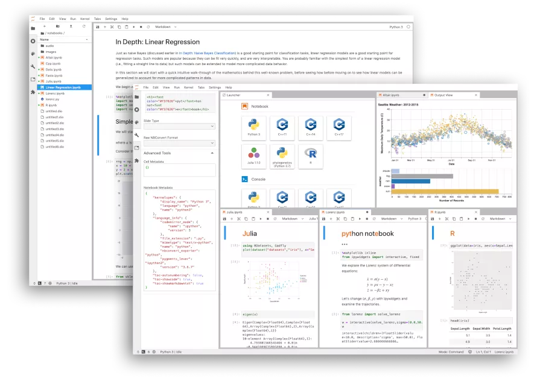
A computational notebook is a shareable document that combines computer code, plain language descriptions, data, rich visualizations like 3D models, charts, graphs and figures, and interactive controls. A notebook, along with an editor like JupyterLab, provides a fast interactive environment for prototyping and explaining code, exploring and visualizing data, and sharing ideas with others.
Terminal commands:
conda activate <environment>
jupyter labIt then appears in your default browser.

What you are reading now is actually content rendered from a notebook. Once you clone your repository, you can see and experiment with the actual notebook. If you are viewing this in JupyterLab, try to open the table of content pane for an overview of the notebook (you can collapse the content groups).
Click the folder icon in the left side pane menu. Then click the big blue button with a + to launch a notebook, terminal or other.
You can resize the different windwos and panes by dragging their borders. Notebooks and terminals will appear in separate tabs. but you can drag tabs to the left/rigth/top/bottom of your main window to split the view and see more notebooks or terminals together.
Shift-Cmd C on Mac, Shift-Ctrl C on Windows. Just start typing to find the command you want to execute.Code cells: Cells with code, which any output below the cell:
print('hello world')hello worldMarkdown cells: Cells with Markdown formatted text, which render in-place. So this
snippet of *italic* and **bold** textsnippet of italic and bold text
Raw cells: You can also make cells with raw/plain text, but that is not used much.
This is raw text
In the the notebook toolbar there is a dropdown, where you can choose between Code, Markdown, and Raw for the current cell.
To execute/render a cell, you either press the “play” icon in the toolbar or press Cmd/Ctrl-Enter. To execute/render and go on to the next cell (usually what you do), press Shift-Enter.
Once executed, Mardown cells render in-place, showing the redered text instead of the Markdown code. To reveal/edit the Markdown text just double-click the cell.
Once executed, code displays show the value produced by the last statement in the cell, unless is it None (and any print statements):
Displays nothing:
x = 0Displays value of x:
x = 1
x1To suppress display of last statement value, you can add a trailing ; (see later about plotting):
x = 1
x ; # see, displays nothing belowWhat you are doing in a notebook is more like interactive Python than running a script. That means that running the same code more than once, or running cells in a different can produce different outcomes.
Make an effort to write your notebooks in a way so they only work if executed in the manner you intend. One way to do that is to avoid using the same variable name for different purposes. In example below y should end up as 6, but if you run the x = "banana" cell again after the x = 3 cell, it ends up as 'bananabanana'.
x = "banana"x = 3y = 2 * x
y6It is also good (and safe) style to make sure that running the same cell twice does not change its results:
x = 0 # initializing x ensures that accidentally running the cell twice is not a problem
x += 1
x1Jupyter adds an extra feature that you do not otherwise have. Everythin after an ! in a code cell is interpreted as a shell command and executed:
! ls00_jupyterlab.ipynb 02_interaction.ipynb
01_weather.ipynb README.mdYou can even capture the output in a list like this:
files_names = ! ls
files_names['00_jupyterlab.ipynb',
'01_weather.ipynb',
'02_interaction.ipynb',
'README.md']Sometimes you may have executed some code that is taking a long time and needs to be aborted. To do that you click the “square” (stop) icon in the notebook toolbar.
Although you try to avoid it, mistakes like the ones mentioned above happen. So when you sometimes it is good to restart the Python process (the kernel) and run all the cells in order, just to make sure it does what you thinik. You can do that by selecting “Restart Kernel and Run All Cells” from the “Run” menu.
## Markdown text
This Markdown text is displays as the shown below. You can do **bold** and *italics*, show inline code, `x = 2 + 2`. You can show latex style formulas:
$\sum_{i=0}^n i$
You can make bullet lists:
- foo
- bar
- baz
numbered lists:
1. foo
2. bar
3.
quotes:
> This is a quote
and headers at different levels:
##### Sub-sub-sub-sub header
<i>and even use raw HTML</i>
tables:
| Name | Value |
| :-----| :---- |
| foo | 1111 |
| bar | 0000 |This Markdown text is produced from the code below. You can do bold and italics, show inline code, x = 2 + 2. You can show latex style formulas:
\(\sum_{i=0}^n i\)
You can make bullet lists:
numbered lists:
quotes:
This is a quote
and headers at different levels:
and even use raw HTML
tables:
| Name | Value |
|---|---|
| foo | 999 |
| bar | 1111 |
If you need to execute some HTML code, you can make a code cell with the %%html magic on the first line. This sets fixed width numbers in tables so you can easily see how their magnitudes compare:
%%html
<style> table { font-variant-numeric: tabular-nums; } </style>| Name | Value |
|---|---|
| foo | 999 |
| bar | 1111 |
To add and image, simply make a Markdown cell and drag an image into it.
You can move a cell by click-holding the left cell margin and dragging it to a new location. You can shift-click several cell margins to select more cells. The “Edit menu has commands for splitting a cell, merging cells, and much more.
Once you get the hang of using notebooks, you will appreaciate keyboard shortcuts. You can see them with Shift-Cmd H on Mac, Shift-Ctrl H on Windows. There are two sets of shortcuts and you will see the ones relevant to the mode you are in. You are in “edit” when you are editing the content of cells. You can change to “command” mode by pressing `Ctrl-M’. If you view the shortcuts now, you get a different set relevant to other things that editing, like splitting, merging and copying cells.
E.g., if I just made a new code cell and want to change it to a Markdown cell, I would press Ctrl-M for command mode and then M to change to Markdown. You will get the hang of it.
Numpy arrays allow fast computation using vectors and matrices.
The section below gives you the gist of what you can do. Look at the numpy guides to learn more (or ask your supervisor).
Adding the values of two equal-sized lists in python might look something like this:
list1 = [0, 1, 2, 3, 4, 5, 6, 7, 8, 9]
list2 = [9, 8, 7, 6, 5, 4, 3, 2, 1, 0]
summed = []
for i in range(len(list1)):
summed.append(list1[i] + list2[i])
summed[9, 9, 9, 9, 9, 9, 9, 9, 9, 9]But with arrays, you can broadcast operations across arrays like in R:
import numpy as npa = np.array(list1)
b = np.array(list2)
a, b(array([0, 1, 2, 3, 4, 5, 6, 7, 8, 9]), array([9, 8, 7, 6, 5, 4, 3, 2, 1, 0]))a + barray([9, 9, 9, 9, 9, 9, 9, 9, 9, 9])a * barray([ 0, 8, 14, 18, 20, 20, 18, 14, 8, 0])a - 10array([-10, -9, -8, -7, -6, -5, -4, -3, -2, -1])Arrays have lots of useful methods:
a.sum()45a.mean()4.5In python you can represent a matrix as a list of lists
list_of_lists = [[1, 2, 3], [4, 5, 6], [7, 8, 9]]
list_of_lists[[1, 2, 3], [4, 5, 6], [7, 8, 9]]and index like this:
list_of_lists[1][1]5with numpy, you can make multidimentional arrays:
matrix = np.array(list_of_lists)
matrixarray([[1, 2, 3],
[4, 5, 6],
[7, 8, 9]])You can still index them like this, but you should not:
matrix[1][1] # not efficient5This is the correct and fast way:
matrix[1, 1] # efficient5broadcasting and methods on multidimentional arrays:
matrix - 10array([[-9, -8, -7],
[-6, -5, -4],
[-3, -2, -1]])matrix.sum()45You can make arrays with as many dimentions you like:
list_of_lists_of_lists = [[[1, 2, 3], [4, 5, 6], [7, 8, 9]], [[1, 2, 3], [4, 5, 6], [7, 8, 9]]]
list_of_lists_of_lists[[[1, 2, 3], [4, 5, 6], [7, 8, 9]], [[1, 2, 3], [4, 5, 6], [7, 8, 9]]]tensor = np.array(list_of_lists_of_lists)
tensorarray([[[1, 2, 3],
[4, 5, 6],
[7, 8, 9]],
[[1, 2, 3],
[4, 5, 6],
[7, 8, 9]]])tensor[1, 1, 1]5Fast computations on data tables (use numpy arrays internally).
The section below gives you the gist of what you can do. Look at the pandas guides to learn more (or ask your supervisor).
import pandas as pdMake a dataframe from a dictionary:
df = pd.DataFrame({'name': ['Mike', 'Mia', 'Jake'], 'weight': [82, 62, 75]})
df| name | weight | |
|---|---|---|
| 0 | Mike | 82 |
| 1 | Mia | 62 |
| 2 | Jake | 75 |
df = pd.DataFrame(dict(name=['Mike', 'Mia', 'Jake'], weight=[82, 62, 75]))
df| name | weight | |
|---|---|---|
| 0 | Mike | 82 |
| 1 | Mia | 62 |
| 2 | Jake | 75 |
Make a dataframe a list of tuples:
records = [('Mike', 82), ('Mia', 62), ('Jake', 75)]
df = pd.DataFrame(records, columns=['name', 'weight'])
df| name | weight | |
|---|---|---|
| 0 | Mike | 82 |
| 1 | Mia | 62 |
| 2 | Jake | 75 |
or even better:
df = pd.DataFrame().from_records(records, columns=['age', 'weight'])
df| age | weight | |
|---|---|---|
| 0 | Mike | 82 |
| 1 | Mia | 62 |
| 2 | Jake | 75 |
Yes, it is a dataframe object:
type(df)pandas.core.frame.DataFrameDataframes have a row index:
df.indexRangeIndex(start=0, stop=3, step=1)df.index.valuesarray([0, 1, 2])Dataframes have columns with names:
df.columnsIndex(['age', 'weight', 'height', 'sex'], dtype='object')Data in each column can be of different type:
df.dtypesage object
weight int64
height float64
sex category
dtype: objectAdd a column to an existing dataframe:
df['height'] = [182.5, 173.0, 192.5]
df| age | weight | height | sex | |
|---|---|---|---|---|
| 0 | Mike | 82 | 182.5 | male |
| 1 | Mia | 62 | 173.0 | female |
| 2 | Jake | 75 | 192.5 | male |
Add another, categorical, column:
df['sex'] = pd.Categorical(['male', 'female', 'male'], categories=['female', 'male'], ordered=True)
df| age | weight | height | sex | |
|---|---|---|---|---|
| 0 | Mike | 82 | 182.5 | male |
| 1 | Mia | 62 | 173.0 | female |
| 2 | Jake | 75 | 192.5 | male |
df.dtypesage object
weight int64
height float64
sex category
dtype: objectYou can access individual columns as attributes:
df.height0 182.5
1 173.0
2 192.5
Name: height, dtype: float64or as keys:
df['height']0 182.5
1 173.0
2 192.5
Name: height, dtype: float64A column in a dataframe is a “Series”:
sr = df.height
type(sr)pandas.core.series.Seriesbut can easily turned into an array if need be:
sr.to_numpy()array([182.5, 173. , 192.5])Below we load an example data set form the seaborn plotting library and show some of the most common uses of pandas:
import seaborn as sns
penguins = sns.load_dataset('penguins')penguins| species | island | bill_length_mm | bill_depth_mm | flipper_length_mm | body_mass_g | sex | |
|---|---|---|---|---|---|---|---|
| 0 | Adelie | Torgersen | 39.1 | 18.7 | 181.0 | 3750.0 | Male |
| 1 | Adelie | Torgersen | 39.5 | 17.4 | 186.0 | 3800.0 | Female |
| 2 | Adelie | Torgersen | 40.3 | 18.0 | 195.0 | 3250.0 | Female |
| 3 | Adelie | Torgersen | NaN | NaN | NaN | NaN | NaN |
| 4 | Adelie | Torgersen | 36.7 | 19.3 | 193.0 | 3450.0 | Female |
| ... | ... | ... | ... | ... | ... | ... | ... |
| 339 | Gentoo | Biscoe | NaN | NaN | NaN | NaN | NaN |
| 340 | Gentoo | Biscoe | 46.8 | 14.3 | 215.0 | 4850.0 | Female |
| 341 | Gentoo | Biscoe | 50.4 | 15.7 | 222.0 | 5750.0 | Male |
| 342 | Gentoo | Biscoe | 45.2 | 14.8 | 212.0 | 5200.0 | Female |
| 343 | Gentoo | Biscoe | 49.9 | 16.1 | 213.0 | 5400.0 | Male |
344 rows × 7 columns
penguins.dtypesspecies object
island object
bill_length_mm float64
bill_depth_mm float64
flipper_length_mm float64
body_mass_g float64
sex object
dtype: objectpenguins.head()| species | island | bill_length_mm | bill_depth_mm | flipper_length_mm | body_mass_g | sex | |
|---|---|---|---|---|---|---|---|
| 0 | Adelie | Torgersen | 39.1 | 18.7 | 181.0 | 3750.0 | Male |
| 1 | Adelie | Torgersen | 39.5 | 17.4 | 186.0 | 3800.0 | Female |
| 2 | Adelie | Torgersen | 40.3 | 18.0 | 195.0 | 3250.0 | Female |
| 3 | Adelie | Torgersen | NaN | NaN | NaN | NaN | NaN |
| 4 | Adelie | Torgersen | 36.7 | 19.3 | 193.0 | 3450.0 | Female |
penguins.tail()| species | island | bill_length_mm | bill_depth_mm | flipper_length_mm | body_mass_g | sex | |
|---|---|---|---|---|---|---|---|
| 339 | Gentoo | Biscoe | NaN | NaN | NaN | NaN | NaN |
| 340 | Gentoo | Biscoe | 46.8 | 14.3 | 215.0 | 4850.0 | Female |
| 341 | Gentoo | Biscoe | 50.4 | 15.7 | 222.0 | 5750.0 | Male |
| 342 | Gentoo | Biscoe | 45.2 | 14.8 | 212.0 | 5200.0 | Female |
| 343 | Gentoo | Biscoe | 49.9 | 16.1 | 213.0 | 5400.0 | Male |
Write it to a hdf5 file (in the current dir):
penguins.to_hdf('penguins.h5', key='df', format='table')Read it back in from file:
penguins = pd.read_hdf('penguins.h5')penguins['flipper_length_mm']0 181.0
1 186.0
2 195.0
3 NaN
4 193.0
...
339 NaN
340 215.0
341 222.0
342 212.0
343 213.0
Name: flipper_length_mm, Length: 344, dtype: float64penguins.flipper_length_mm0 181.0
1 186.0
2 195.0
3 NaN
4 193.0
...
339 NaN
340 215.0
341 222.0
342 212.0
343 213.0
Name: flipper_length_mm, Length: 344, dtype: float64type(penguins.flipper_length_mm)pandas.core.series.Seriespenguins.bill_depth_mm - 10000 -981.3
1 -982.6
2 -982.0
3 NaN
4 -980.7
...
339 NaN
340 -985.7
341 -984.3
342 -985.2
343 -983.9
Name: bill_depth_mm, Length: 344, dtype: float64penguins.bill_depth_mm * penguins.flipper_length_mm0 3384.7
1 3236.4
2 3510.0
3 NaN
4 3724.9
...
339 NaN
340 3074.5
341 3485.4
342 3137.6
343 3429.3
Length: 344, dtype: float64penguins.loc[4, 'island']'Torgersen'penguins.loc[4]species Adelie
island Torgersen
bill_length_mm 36.7
bill_depth_mm 19.3
flipper_length_mm 193.0
body_mass_g 3450.0
sex Female
Name: 4, dtype: objectpenguins['bill_depth_mm']0 18.7
1 17.4
2 18.0
3 NaN
4 19.3
...
339 NaN
340 14.3
341 15.7
342 14.8
343 16.1
Name: bill_depth_mm, Length: 344, dtype: float64penguins.bill_depth_mm0 18.7
1 17.4
2 18.0
3 NaN
4 19.3
...
339 NaN
340 14.3
341 15.7
342 14.8
343 16.1
Name: bill_depth_mm, Length: 344, dtype: float64penguins.loc[40:45, ['island', 'body_mass_g']]| island | body_mass_g | |
|---|---|---|
| 40 | Dream | 3150.0 |
| 41 | Dream | 3900.0 |
| 42 | Dream | 3100.0 |
| 43 | Dream | 4400.0 |
| 44 | Dream | 3000.0 |
| 45 | Dream | 4600.0 |
idx = penguins.bill_length_mm > 55
idx0 False
1 False
2 False
3 False
4 False
...
339 False
340 False
341 False
342 False
343 False
Name: bill_length_mm, Length: 344, dtype: boolpenguins.loc[idx]| species | island | bill_length_mm | bill_depth_mm | flipper_length_mm | body_mass_g | sex | |
|---|---|---|---|---|---|---|---|
| 169 | Chinstrap | Dream | 58.0 | 17.8 | 181.0 | 3700.0 | Female |
| 215 | Chinstrap | Dream | 55.8 | 19.8 | 207.0 | 4000.0 | Male |
| 253 | Gentoo | Biscoe | 59.6 | 17.0 | 230.0 | 6050.0 | Male |
| 321 | Gentoo | Biscoe | 55.9 | 17.0 | 228.0 | 5600.0 | Male |
| 335 | Gentoo | Biscoe | 55.1 | 16.0 | 230.0 | 5850.0 | Male |
penguins.loc[(penguins.bill_length_mm > 55) & (penguins.sex == 'Female')]| species | island | bill_length_mm | bill_depth_mm | flipper_length_mm | body_mass_g | sex | |
|---|---|---|---|---|---|---|---|
| 169 | Chinstrap | Dream | 58.0 | 17.8 | 181.0 | 3700.0 | Female |
penguins| species | island | bill_length_mm | bill_depth_mm | flipper_length_mm | body_mass_g | sex | |
|---|---|---|---|---|---|---|---|
| 0 | Adelie | Torgersen | 39.1 | 18.7 | 181.0 | 3750.0 | Male |
| 1 | Adelie | Torgersen | 39.5 | 17.4 | 186.0 | 3800.0 | Female |
| 2 | Adelie | Torgersen | 40.3 | 18.0 | 195.0 | 3250.0 | Female |
| 3 | Adelie | Torgersen | NaN | NaN | NaN | NaN | NaN |
| 4 | Adelie | Torgersen | 36.7 | 19.3 | 193.0 | 3450.0 | Female |
| ... | ... | ... | ... | ... | ... | ... | ... |
| 339 | Gentoo | Biscoe | NaN | NaN | NaN | NaN | NaN |
| 340 | Gentoo | Biscoe | 46.8 | 14.3 | 215.0 | 4850.0 | Female |
| 341 | Gentoo | Biscoe | 50.4 | 15.7 | 222.0 | 5750.0 | Male |
| 342 | Gentoo | Biscoe | 45.2 | 14.8 | 212.0 | 5200.0 | Female |
| 343 | Gentoo | Biscoe | 49.9 | 16.1 | 213.0 | 5400.0 | Male |
344 rows × 7 columns
df = penguins.set_index(['species', 'sex', 'island'])
df.head(10)| bill_length_mm | bill_depth_mm | flipper_length_mm | body_mass_g | |||
|---|---|---|---|---|---|---|
| species | sex | island | ||||
| Adelie | Male | Torgersen | 39.1 | 18.7 | 181.0 | 3750.0 |
| Female | Torgersen | 39.5 | 17.4 | 186.0 | 3800.0 | |
| Torgersen | 40.3 | 18.0 | 195.0 | 3250.0 | ||
| NaN | Torgersen | NaN | NaN | NaN | NaN | |
| Female | Torgersen | 36.7 | 19.3 | 193.0 | 3450.0 | |
| Male | Torgersen | 39.3 | 20.6 | 190.0 | 3650.0 | |
| Female | Torgersen | 38.9 | 17.8 | 181.0 | 3625.0 | |
| Male | Torgersen | 39.2 | 19.6 | 195.0 | 4675.0 | |
| NaN | Torgersen | 34.1 | 18.1 | 193.0 | 3475.0 | |
| Torgersen | 42.0 | 20.2 | 190.0 | 4250.0 |
df.reset_index()| species | sex | island | bill_length_mm | bill_depth_mm | flipper_length_mm | body_mass_g | |
|---|---|---|---|---|---|---|---|
| 0 | Adelie | Male | Torgersen | 39.1 | 18.7 | 181.0 | 3750.0 |
| 1 | Adelie | Female | Torgersen | 39.5 | 17.4 | 186.0 | 3800.0 |
| 2 | Adelie | Female | Torgersen | 40.3 | 18.0 | 195.0 | 3250.0 |
| 3 | Adelie | NaN | Torgersen | NaN | NaN | NaN | NaN |
| 4 | Adelie | Female | Torgersen | 36.7 | 19.3 | 193.0 | 3450.0 |
| ... | ... | ... | ... | ... | ... | ... | ... |
| 339 | Gentoo | NaN | Biscoe | NaN | NaN | NaN | NaN |
| 340 | Gentoo | Female | Biscoe | 46.8 | 14.3 | 215.0 | 4850.0 |
| 341 | Gentoo | Male | Biscoe | 50.4 | 15.7 | 222.0 | 5750.0 |
| 342 | Gentoo | Female | Biscoe | 45.2 | 14.8 | 212.0 | 5200.0 |
| 343 | Gentoo | Male | Biscoe | 49.9 | 16.1 | 213.0 | 5400.0 |
344 rows × 7 columns
sorted_df = penguins.sort_values(by="bill_length_mm")
sorted_df.head()| species | island | bill_length_mm | bill_depth_mm | flipper_length_mm | body_mass_g | sex | |
|---|---|---|---|---|---|---|---|
| 142 | Adelie | Dream | 32.1 | 15.5 | 188.0 | 3050.0 | Female |
| 98 | Adelie | Dream | 33.1 | 16.1 | 178.0 | 2900.0 | Female |
| 70 | Adelie | Torgersen | 33.5 | 19.0 | 190.0 | 3600.0 | Female |
| 92 | Adelie | Dream | 34.0 | 17.1 | 185.0 | 3400.0 | Female |
| 8 | Adelie | Torgersen | 34.1 | 18.1 | 193.0 | 3475.0 | NaN |
sorted_df.index.valuesarray([142, 98, 70, 92, 8, 18, 54, 80, 14, 100, 52, 83, 124,
25, 66, 74, 136, 60, 90, 118, 68, 22, 42, 48, 150, 148,
78, 94, 120, 86, 34, 64, 58, 40, 15, 147, 4, 82, 132,
87, 44, 138, 77, 31, 144, 117, 84, 47, 133, 62, 38, 59,
21, 121, 102, 103, 10, 20, 11, 149, 104, 28, 96, 108, 134,
110, 107, 23, 88, 130, 13, 106, 116, 16, 24, 126, 36, 89,
6, 128, 145, 56, 0, 35, 146, 7, 5, 30, 1, 32, 114,
45, 50, 72, 93, 112, 105, 139, 71, 39, 51, 137, 140, 122,
97, 2, 27, 29, 125, 141, 26, 57, 143, 95, 41, 230, 182,
33, 76, 101, 135, 119, 46, 63, 91, 67, 12, 61, 85, 123,
55, 127, 151, 65, 326, 69, 236, 53, 9, 79, 113, 37, 49,
172, 184, 206, 17, 256, 115, 260, 75, 251, 81, 244, 131, 278,
109, 174, 99, 228, 328, 306, 216, 332, 288, 265, 276, 258, 129,
43, 257, 246, 336, 314, 268, 304, 275, 241, 252, 272, 208, 298,
299, 269, 342, 157, 280, 262, 226, 155, 232, 277, 195, 312, 266,
111, 211, 214, 204, 282, 73, 284, 234, 166, 160, 19, 158, 245,
220, 286, 238, 334, 281, 193, 243, 170, 180, 291, 294, 293, 225,
274, 152, 242, 162, 270, 227, 176, 325, 229, 340, 213, 317, 190,
164, 338, 322, 324, 250, 302, 310, 296, 187, 308, 188, 224, 290,
247, 329, 202, 248, 292, 318, 233, 255, 271, 173, 320, 295, 259,
239, 222, 337, 192, 199, 231, 300, 323, 254, 171, 237, 235, 209,
316, 313, 179, 287, 263, 261, 217, 186, 331, 201, 285, 343, 303,
153, 221, 223, 249, 198, 273, 210, 219, 240, 168, 279, 341, 267,
330, 167, 178, 264, 175, 289, 205, 305, 218, 197, 315, 196, 194,
185, 297, 319, 154, 159, 161, 307, 203, 333, 200, 163, 212, 165,
177, 189, 309, 207, 311, 301, 156, 181, 327, 191, 183, 283, 335,
215, 321, 169, 253, 3, 339])Click to the left of an output cell to enable/disable scrolling of the output (usefull for large amounts of output).
sorted_df.loc[0]species Adelie
island Torgersen
bill_length_mm 39.1
bill_depth_mm 18.7
flipper_length_mm 181.0
body_mass_g 3750.0
sex Male
Name: 0, dtype: objectsorted_df.flipper_length_mm[0]181.0sorted_df.iloc[0] # iloc !!!species Adelie
island Dream
bill_length_mm 32.1
bill_depth_mm 15.5
flipper_length_mm 188.0
body_mass_g 3050.0
sex Female
Name: 142, dtype: objectsorted_df.flipper_length_mm.iloc[0]188.0penguins.describe()| bill_length_mm | bill_depth_mm | flipper_length_mm | body_mass_g | |
|---|---|---|---|---|
| count | 342.000000 | 342.000000 | 342.000000 | 342.000000 |
| mean | 43.921930 | 17.151170 | 200.915205 | 4201.754386 |
| std | 5.459584 | 1.974793 | 14.061714 | 801.954536 |
| min | 32.100000 | 13.100000 | 172.000000 | 2700.000000 |
| 25% | 39.225000 | 15.600000 | 190.000000 | 3550.000000 |
| 50% | 44.450000 | 17.300000 | 197.000000 | 4050.000000 |
| 75% | 48.500000 | 18.700000 | 213.000000 | 4750.000000 |
| max | 59.600000 | 21.500000 | 231.000000 | 6300.000000 |
penguins.bill_length_mm.mean()43.9219298245614penguins.bill_length_mm.count()342penguins.groupby('island')<pandas.core.groupby.generic.DataFrameGroupBy object at 0x15c85ab00>Aggregating produces a single value for each variable in each group:
Means for all numeric variables for each island:
penguins.groupby('island').aggregate("mean", numeric_only=True)| bill_length_mm | bill_depth_mm | flipper_length_mm | body_mass_g | |
|---|---|---|---|---|
| island | ||||
| Biscoe | 45.257485 | 15.874850 | 209.706587 | 4716.017964 |
| Dream | 44.167742 | 18.344355 | 193.072581 | 3712.903226 |
| Torgersen | 38.950980 | 18.429412 | 191.196078 | 3706.372549 |
penguins.groupby('island').mean(numeric_only=True)| bill_length_mm | bill_depth_mm | flipper_length_mm | body_mass_g | |
|---|---|---|---|---|
| island | ||||
| Biscoe | 45.257485 | 15.874850 | 209.706587 | 4716.017964 |
| Dream | 44.167742 | 18.344355 | 193.072581 | 3712.903226 |
| Torgersen | 38.950980 | 18.429412 | 191.196078 | 3706.372549 |
Means for bill_length_mm and flipper_length_mm:
penguins.groupby('island')[['bill_length_mm', 'flipper_length_mm']].mean()| bill_length_mm | flipper_length_mm | |
|---|---|---|
| island | ||
| Biscoe | 45.257485 | 209.706587 |
| Dream | 44.167742 | 193.072581 |
| Torgersen | 38.950980 | 191.196078 |
Just for flipper_length_mm:
penguins.groupby('island').flipper_length_mm.mean()island
Biscoe 209.706587
Dream 193.072581
Torgersen 191.196078
Name: flipper_length_mm, dtype: float64Transforming produces new colums with the same length as the input:
penguins.groupby('island')[['bill_length_mm', 'flipper_length_mm']].transform("mean")| bill_length_mm | flipper_length_mm | |
|---|---|---|
| 0 | 38.950980 | 191.196078 |
| 1 | 38.950980 | 191.196078 |
| 2 | 38.950980 | 191.196078 |
| 3 | 38.950980 | 191.196078 |
| 4 | 38.950980 | 191.196078 |
| ... | ... | ... |
| 339 | 45.257485 | 209.706587 |
| 340 | 45.257485 | 209.706587 |
| 341 | 45.257485 | 209.706587 |
| 342 | 45.257485 | 209.706587 |
| 343 | 45.257485 | 209.706587 |
344 rows × 2 columns
def z_value(sr):
return (sr - sr.mean()) / sr.std()
penguins.groupby('island')[['bill_length_mm', 'flipper_length_mm']].transform(z_value)| bill_length_mm | flipper_length_mm | |
|---|---|---|
| 0 | 0.049258 | -1.636022 |
| 1 | 0.181475 | -0.833742 |
| 2 | 0.445910 | 0.610362 |
| 3 | NaN | NaN |
| 4 | -0.744048 | 0.289450 |
| ... | ... | ... |
| 339 | NaN | NaN |
| 340 | 0.323193 | 0.374297 |
| 341 | 1.077478 | 0.869267 |
| 342 | -0.012044 | 0.162167 |
| 343 | 0.972717 | 0.232877 |
344 rows × 2 columns
Flexible method allowing any operation on grouped data.
Return a single value:
def fun(df):
return df.bill_length_mm + df.flipper_length_mm.mean() / df.body_mass_g
penguins.groupby('island').apply(fun)#.to_frame('my_stat')island
Biscoe 20 37.861678
21 37.758252
22 35.955186
23 38.253090
24 38.855186
...
Torgersen 127 41.544464
128 39.062687
129 44.147799
130 38.557503
131 43.154627
Length: 344, dtype: float64Return a dataframe:
def fun(df):
return pd.DataFrame({'sqrt_bill': np.sqrt(df.bill_length_mm),
'bill_squared': df.bill_length_mm**2})
penguins.groupby('island').apply(fun)| sqrt_bill | bill_squared | ||
|---|---|---|---|
| island | |||
| Biscoe | 20 | 6.148170 | 1428.84 |
| 21 | 6.140033 | 1421.29 | |
| 22 | 5.991661 | 1288.81 | |
| 23 | 6.180615 | 1459.24 | |
| 24 | 6.228965 | 1505.44 | |
| ... | ... | ... | ... |
| Torgersen | 127 | 6.442049 | 1722.25 |
| 128 | 6.244998 | 1521.00 | |
| 129 | 6.640783 | 1944.81 | |
| 130 | 6.204837 | 1482.25 | |
| 131 | 6.565059 | 1857.61 |
344 rows × 2 columns
%config InlineBackend.figure_format = 'retina'import matplotlib.pyplot as plt
import seaborn as sns
sns.set_style("darkgrid")
# make graphics sharper on a good screen
from matplotlib_inline.backend_inline import set_matplotlib_formats
set_matplotlib_formats('retina', 'png')plt.scatter(penguins.bill_length_mm, penguins.flipper_length_mm) ; # semi colon makes last value None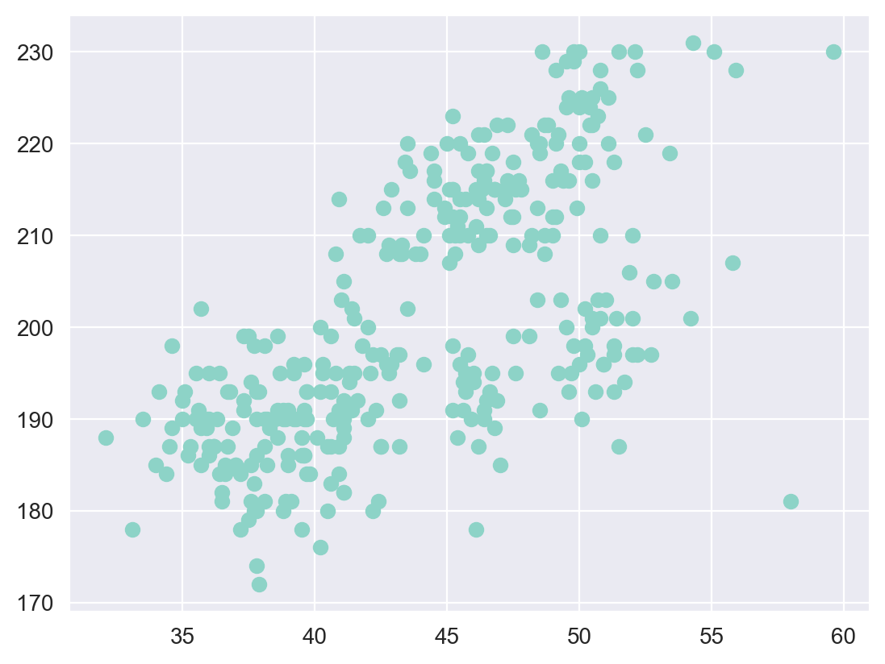
sns.set_style("ticks")
# sns.set_style("darkgrid")
# sns.set_style("whitegrid")
# sns.set_style("white")
# sns.set_style("dark")
plt.scatter(penguins.bill_length_mm, penguins.flipper_length_mm)
sns.despine()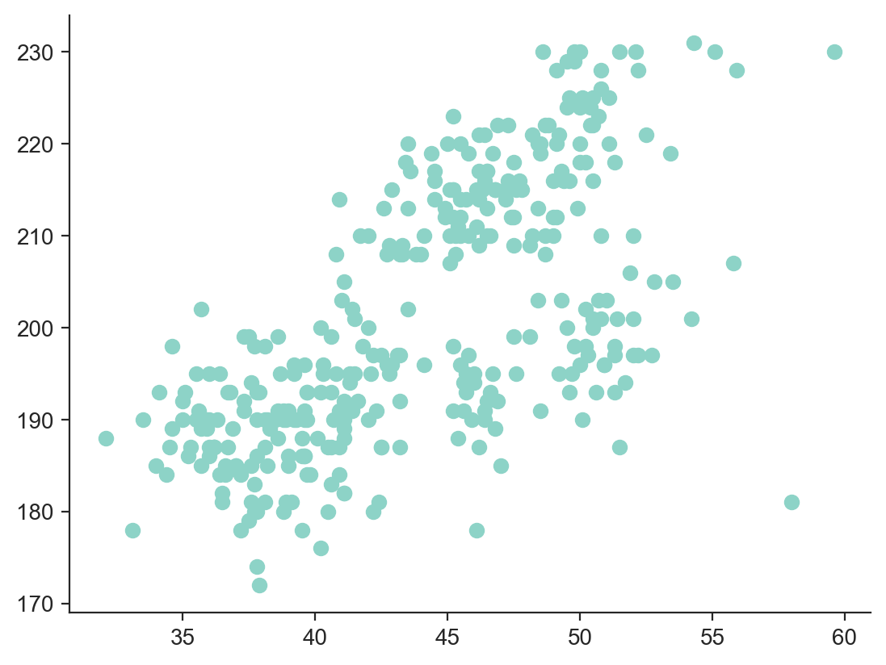
plt.hist(penguins.bill_length_mm) ;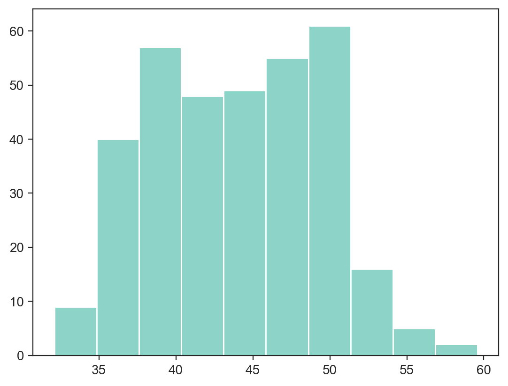
sns.scatterplot(data=penguins, x="bill_length_mm", y="flipper_length_mm") ;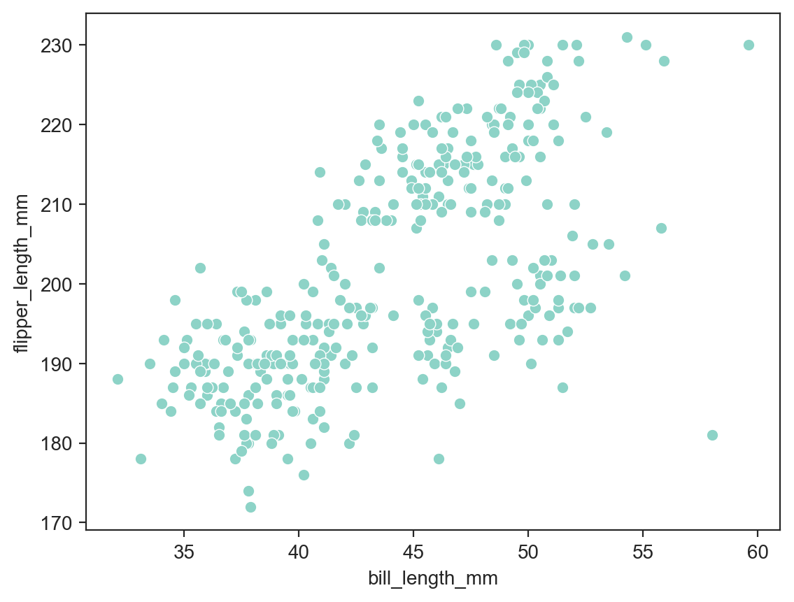
sns.scatterplot(data=penguins, x="bill_length_mm", y="flipper_length_mm", hue="species") ;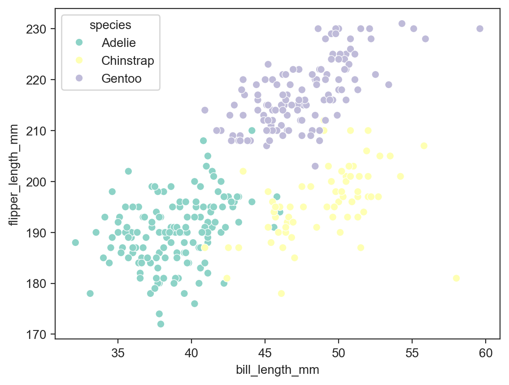
sns.scatterplot(data=penguins, x="bill_length_mm", y="flipper_length_mm", hue="species", style="sex") ;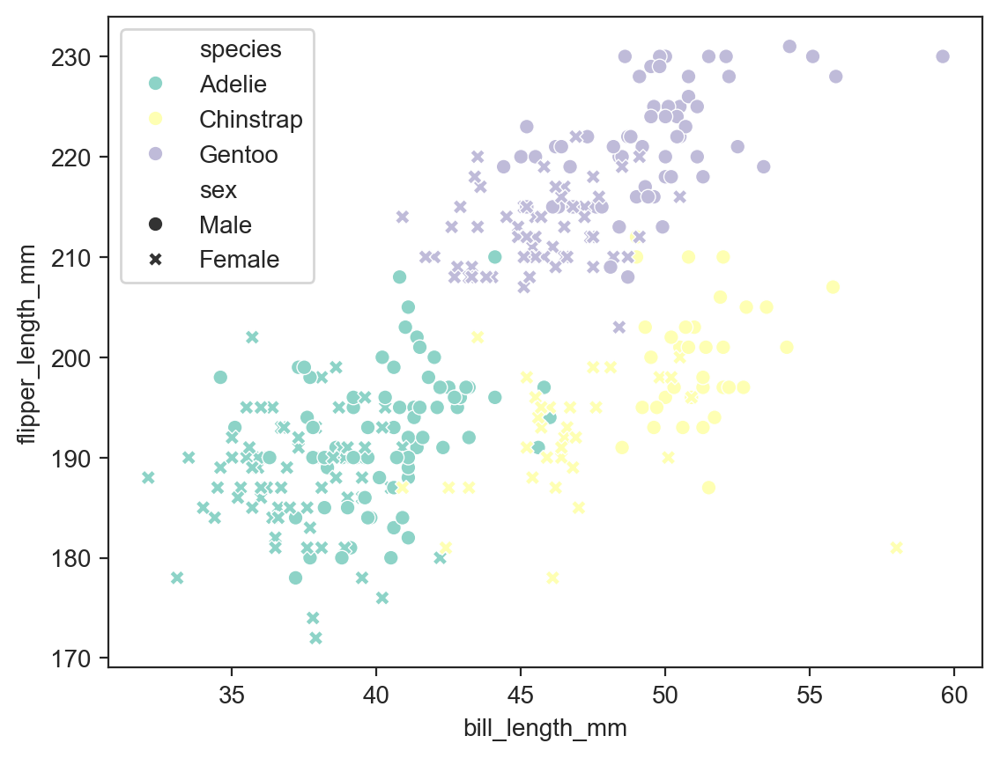
sns.scatterplot(data=penguins, x="bill_length_mm", y="flipper_length_mm", hue="species",
style="sex", size="body_mass_g") ;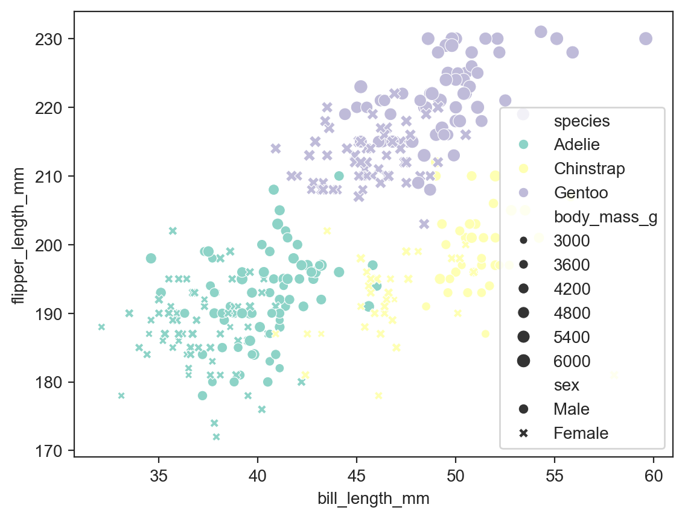
def legend_outside():
plt.legend(bbox_to_anchor=(1.05, 1), loc='upper left', borderaxespad=0)sns.scatterplot(data=penguins, x="bill_length_mm", y="flipper_length_mm", hue="species", style="sex", size="body_mass_g") ;
legend_outside()
plt.title("Penguin measurements")
plt.ylabel("flipper length (mm)")
plt.xlabel("bill length in (mm)") ;
Wide format data:
penguins[['bill_length_mm', 'bill_depth_mm']]| bill_length_mm | bill_depth_mm | |
|---|---|---|
| 0 | 39.1 | 18.7 |
| 1 | 39.5 | 17.4 |
| 2 | 40.3 | 18.0 |
| 3 | NaN | NaN |
| 4 | 36.7 | 19.3 |
| ... | ... | ... |
| 339 | NaN | NaN |
| 340 | 46.8 | 14.3 |
| 341 | 50.4 | 15.7 |
| 342 | 45.2 | 14.8 |
| 343 | 49.9 | 16.1 |
344 rows × 2 columns
Long format data:
long_df = penguins.melt(value_vars=['bill_length_mm', 'bill_depth_mm'])
long_df| variable | value | |
|---|---|---|
| 0 | bill_length_mm | 39.1 |
| 1 | bill_length_mm | 39.5 |
| 2 | bill_length_mm | 40.3 |
| 3 | bill_length_mm | NaN |
| 4 | bill_length_mm | 36.7 |
| ... | ... | ... |
| 683 | bill_depth_mm | NaN |
| 684 | bill_depth_mm | 14.3 |
| 685 | bill_depth_mm | 15.7 |
| 686 | bill_depth_mm | 14.8 |
| 687 | bill_depth_mm | 16.1 |
688 rows × 2 columns
long format is required when you want a number of columns to appear as a “variable” in the plot. As in the example below where the color “variable” reflects whether the point is bill_depth_mm or bill_length_mm.
Retain other information for each observation:
long_df = penguins.melt(id_vars=['species', 'body_mass_g', 'island'], value_vars=['bill_length_mm', 'bill_depth_mm'])
long_df| species | body_mass_g | island | variable | value | |
|---|---|---|---|---|---|
| 0 | Adelie | 3750.0 | Torgersen | bill_length_mm | 39.1 |
| 1 | Adelie | 3800.0 | Torgersen | bill_length_mm | 39.5 |
| 2 | Adelie | 3250.0 | Torgersen | bill_length_mm | 40.3 |
| 3 | Adelie | NaN | Torgersen | bill_length_mm | NaN |
| 4 | Adelie | 3450.0 | Torgersen | bill_length_mm | 36.7 |
| ... | ... | ... | ... | ... | ... |
| 683 | Gentoo | NaN | Biscoe | bill_depth_mm | NaN |
| 684 | Gentoo | 4850.0 | Biscoe | bill_depth_mm | 14.3 |
| 685 | Gentoo | 5750.0 | Biscoe | bill_depth_mm | 15.7 |
| 686 | Gentoo | 5200.0 | Biscoe | bill_depth_mm | 14.8 |
| 687 | Gentoo | 5400.0 | Biscoe | bill_depth_mm | 16.1 |
688 rows × 5 columns
sns.scatterplot(data=long_df, x='body_mass_g', y='value', hue='variable', style='species')
legend_outside()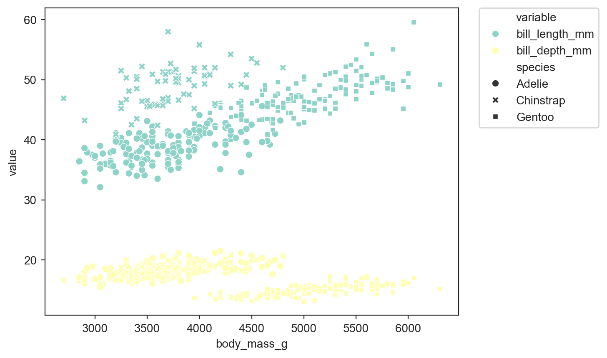
sns.boxplot(data=long_df, x='species', y='value', hue='variable') ;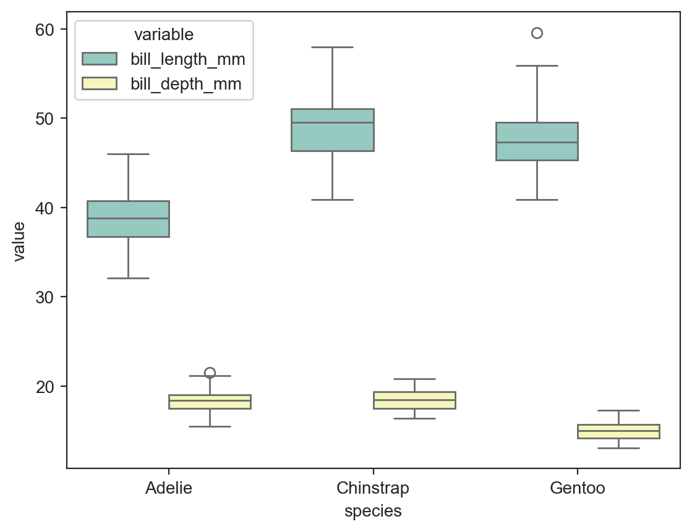
sns.boxplot(data=long_df, x='variable', y='value', hue='species') ;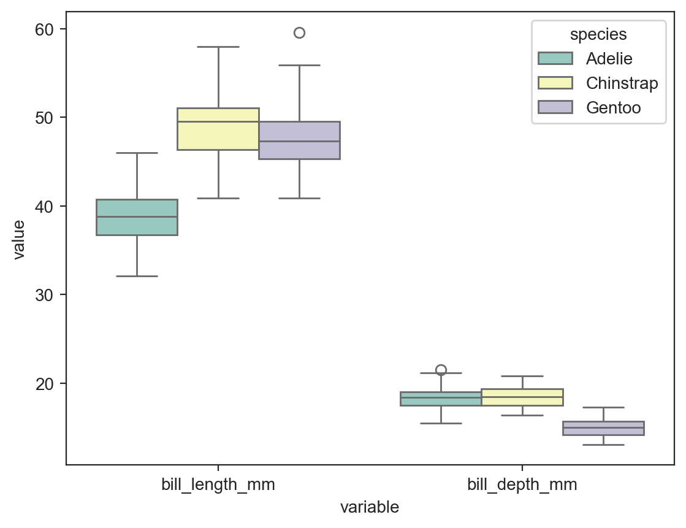
sns.boxplot(data=long_df, x='species', y='value', hue='variable') ;g = sns.FacetGrid(penguins, col="island")
g ;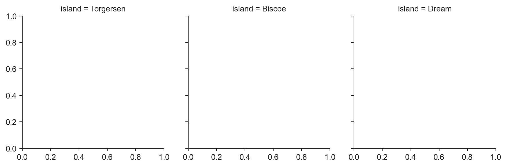
Map plotting to each facet:
g = sns.FacetGrid(penguins, col="island", hue="species") ;
g.map(sns.scatterplot, "bill_length_mm", "flipper_length_mm") ;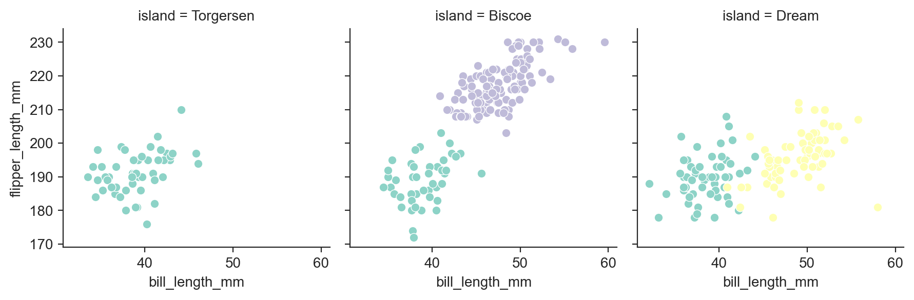
Grid of facets representing combinations of two variables:
g = sns.FacetGrid(penguins, row="sex", col="island", hue="species") ;
g.map(sns.scatterplot, "bill_length_mm", "flipper_length_mm") ;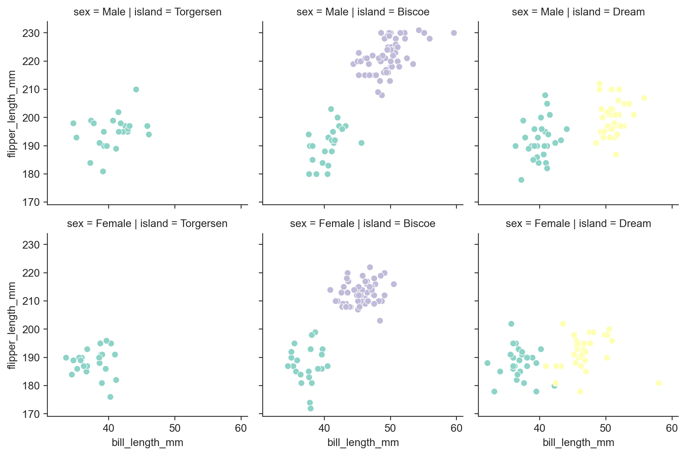
g = sns.FacetGrid(penguins, row="sex", col="island", hue="species") ;
g.map(sns.regplot, "bill_length_mm", "flipper_length_mm") ;
sns.lmplot(data=penguins, x="bill_length_mm", y="flipper_length_mm", row="sex", col="island", hue="species", height=3) ;
When you use FacetGrid.map(func, "col1", "col2", ...), the function func is passed the values of the columns "col1" and "col2" (and more if needed) as parameters 1 and 2 (args[0], args[1], …). In addition, the function always receives a keyword argument named color=.
def scatter(*args, **kwargs):
return plt.scatter(args[0], args[1], **kwargs)
g = sns.FacetGrid(penguins, row="sex", col="island", hue="species") ;
g.map(scatter, "bill_length_mm", "flipper_length_mm") ;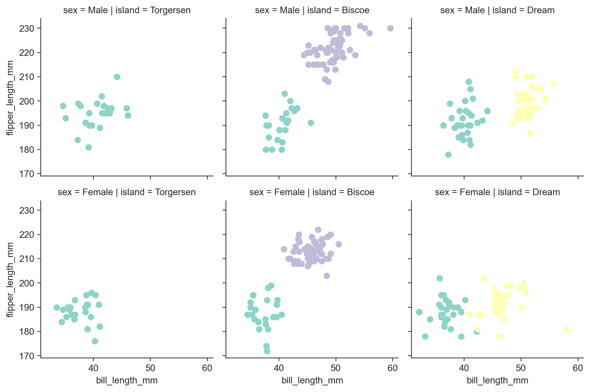
When you use FacetGrid.map_dataframe(func, "col1", "col2", ...), the function func is passed the names "col1" and "col2" (and more if needed) as parameters 1 and 2 (args[0], args[1], …), and the filtered dataframe as keyword argument data=. In addition, the function always receives a keyword argument named color=.
def scatterplot(*args, **kwargs):
return sns.scatterplot(x=args[0], y=args[1], **kwargs)
g = sns.FacetGrid(penguins, row="sex", col="island", hue="species") ;
g.map_dataframe(scatterplot, "bill_length_mm", "flipper_length_mm") ;
g = sns.FacetGrid(penguins, row="sex", col="island", hue="species") ;
g.map(sns.histplot, "bill_length_mm") ;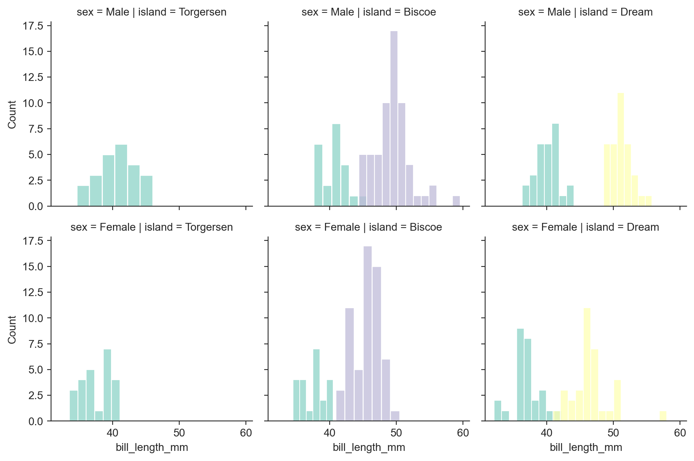
g = sns.FacetGrid(penguins, row="sex", col="island", hue="species") ;
g.map(sns.kdeplot, "bill_length_mm") ;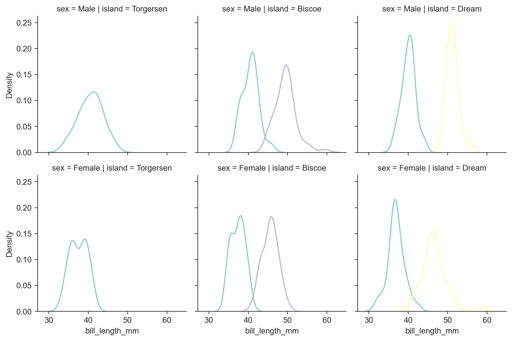
sns.pairplot(penguins, hue="species") ;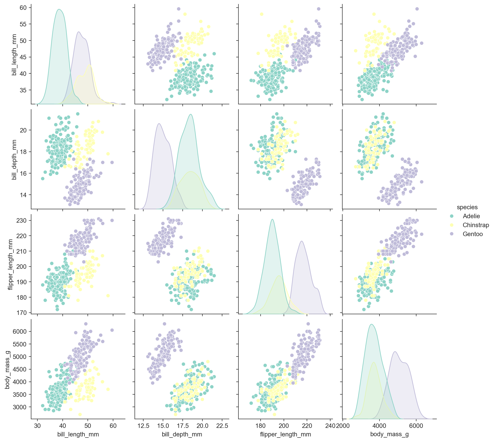
sns.pairplot(penguins, hue="sex") ;
import matplotlib.pyplot as plt
from matplotlib_inline.backend_inline import set_matplotlib_formats
#set_matplotlib_formats('retina', 'png')
set_matplotlib_formats('pdf', 'svg')
import seaborn as sns
sns.set()
sns.set_style("ticks")
import randomplt.scatter([random.random() for i in range(100)],
[random.random() for i in range(100)]) ;